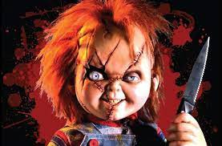

Guia dos melhores Filmes
 Boneco Assasino
Child's Play (bra: Brinquedo Assassino[2] / por: Chucky, o Boneco Diabólico[5]) é um filme de suspense e terror estadunidense de 1988, dirigido e co-escrito por Tom Holland e produzido por David Kirschner a partir de uma história de Don Mancini.[6] É o primeiro filme da série Child's Play onde é apresentado o personagem Chucky.
Curiosidade:
O nome completo de Chucky, Charles Lee Ray, é uma alusão a 3 notáveis
assassinos em série: Charles Manson (o assassino da atriz Sharon Tate, que
estava grávida na época), Lee Harvey Oswald (o atirador que assassinou John F.
Kennedy em 1963) e James Earl Ray (o homem que assassinou Martin Luther King, Jr.).
Outros Filme: Scream , JogosMortais